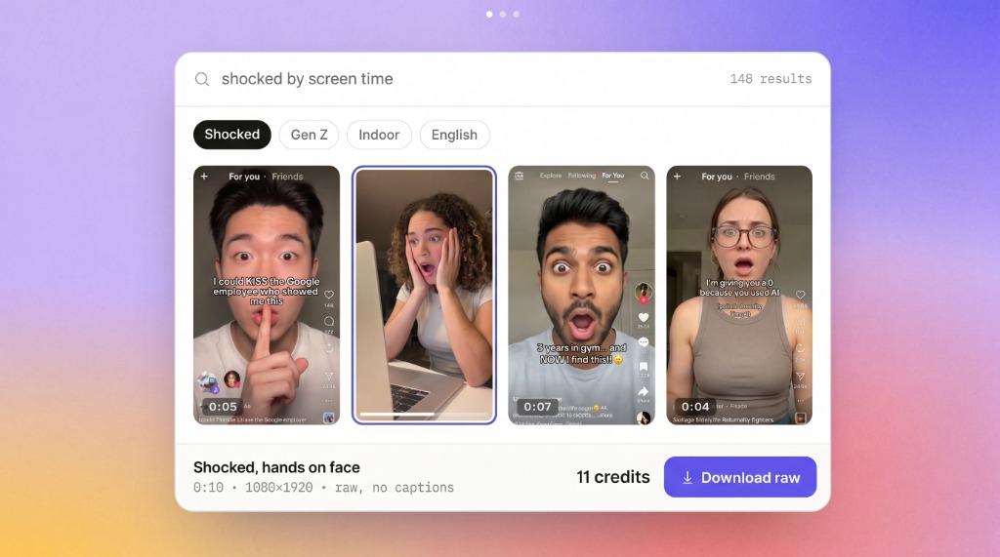

Turn genuine consumer reactions into UGC, insights, and winning creative.
Search real creator reactions by emotion, energy, expression, and vibe.

Preview the reaction, choose your usage rights, and license it instantly.
Combine reactions with your product or ad and turn them into campaign-ready creatives.